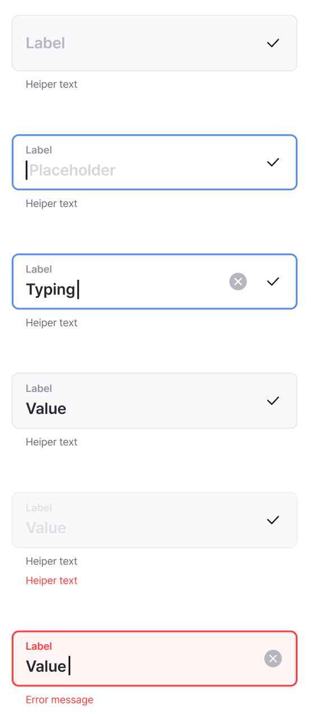
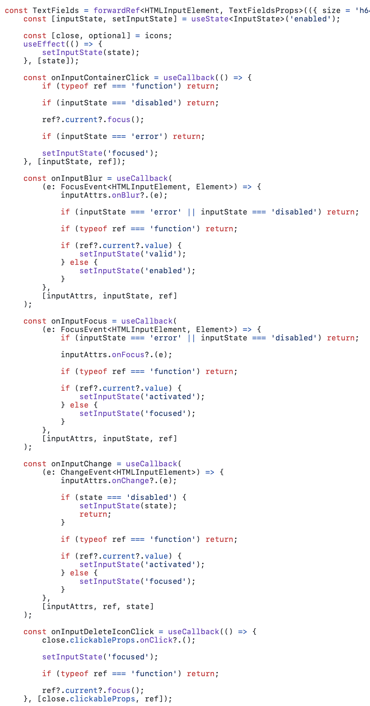
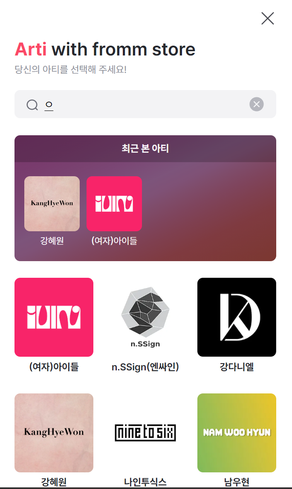

# 동료를 당황시키지 않는 <br />순수 함수 적정 기술 김태희 노머스 **Fromm팀** 웹 프론트 개발자 --- ## 순서 - 프롬과 도메인 소개 - 함수형이 받아들여지려면? - 순수함수란? - <div><div class="left">텍스트 필드<span class="middle">x</span></div> style</div> - <div><div class="left">가격 포맷 <span class="middle">x</span></div> context</div> - <div><div class="left">실시간 검색 <span class="middle">x</span></div> optimization</div> - <div><div class="left">결제 수단 <span class="middle">x</span></div> domain logic</div> --- ## 프롬 아티스트와의 채팅부터, 굿즈, 공연, 영상 등의 제작부터 판매까지 모든 것을 하나의 플랫폼에서    --- ## 함수형이 받아들여지려면? - 거꾸로 말하면 함수형은 왜 받아들여지지 못할까? --- ### "함수형 좋아요!"" - 불변, lazy, 일급함수, 순수함수, 모나드, 커링 ... - "유지보수하기 좋은 코드를 짜게 해줍니다" - "읽기 쉽고 간결한 코드를 짜게 해줍니다" - ... --- ### "낯선 것은 어려운 것이 아니다" 명령형이나 객체지향이라고 더 쉽진 않음. 클래스, 상속... 오늘도 명령형의 고통을 많이 보실 겁니다. --- ### 하지만 낯선 것이 더 어렵게 느껴진다 함수와 명령형 코드 중에 무엇이 더 쉽게 느껴지시나요? ```ts // 함수형 const total = items.reduce((acc, item) => item.price, 0) // 명령형 let total = 0 for (const item of items) { total += item.price } ``` --- ### 함수스럽지 않은 기술과 생태계 - 리액트 같은 주류 프레임워크가 함수형을 지향함에도 - JS는 영속 자료구조를 지원하지 않고 - <span class='text-sm'> (tuple과 record proposal의 stage가 몇인지 세고 있다)</span> - 라이브러리들도 명령적인 api가 많음 --- ### 점진적으로 함수형를 도입할 수는 없을까? --- ### 누구나 이해할 수 있는 <br/>적정기술부터 시작해보자 바로 순수함수! --- ## 순수 함수란? 우리가 수학 시간에 배우는 바로 그 함수.  ```ts function (입력: X): Y { return 출력 } ``` --- <div class="hstack">  <div> ## textfield 만들기 디자인 시스템에 정의된<br/> textfields 컴포넌트는<br/> **상태**에 따라 모양이 다릅니다 - enabled, focused, activated - valid, disabled, error </div> </div> --- <div class="hstack">  <div> ### 첫 시도. 명령형으로 구현하기 - 일종의 유한 상태 기계 - 각 event마다 다른 상태로 전이 - ex 값을 입력하면 activated 로 전이 - 그런데 전이와 조건문이 너무 많은데? </div> </div> --- ### 결국 수 많은 에러와 엣지 케이스!  --- ### **상태**와 **계산**을 구분하기 --- ### 진짜 상태는 무엇인가? - input이 focus되어 있는가? - input에 값이 있는가? - input이 disable되어 있는가? - input에 에러가 있는가? --- ### 파생 상태를 계산하는 순수함수 만들기 ```ts export function computeState({ isFocused, value, disabled, showError }): InputState { if (disabled) { return 'disabled'; } if (isFocused) { if (value.length > 0) { return 'activated'; } return 'focused'; } if (showError) { return 'error'; } if (value.length === 0) { return 'enabled'; } return 'valid'; } ``` --- ### 순수 함수는 테스트하기 쉽다 ```ts test('focus인데 입력값이 없으면 focused 상태다', () => { expect(computeState({ disabled: false, value: '', isFocused: true })).toBe('focused'); }); test('focus인데 입력값이 있으면 activated 상태다', () => { expect(computeState({ disabled: false, value: 'test', isFocused: true })).toBe('activated'); }); ``` --- ### 엄청나게 줄어든 코드! - component는 상태 동기화에만 집중하고 - 디자이너가 의도한 로직은 순수함수가 담당  --- ## 금액 포맷 같은 상품이라도 <br/> 사용자가 설정한 통화에 따라 다르게 포맷되어야 함 <br/>원화는 뒤에 "원"이 붙고, 달러는 앞에 "$"가 붙음 <div class='r-hstack'>   </div> --- ### 숨겨진 외부 의존성 - context로 설정을 주입 받는 건 매우 좋지만. - 유연함을 떨어트리고, react hook의 법칙에 종속됨 ```ts const useUtils = () => { const [currency] = useAtom(currencyAtom); // <- jotai 의존성! const formatPrice = useCallback( (price: number) => { const formattedPrice = addCommaToNumber(price ?? 0); return currency.code === 'KRW' ? `${formattedPrice}원` : `$${formattedPrice}`; }, [currency.code] ); return { formatPrice } } const { formatPrice } = useUtils(); formatPrice(1000); // "1,000원" ``` --- ### 이미 구매한 물건의 <br />가격이 잘못 표기되는 에러!  --- ### 그러면 어떻게?<br/> 매개변수로 명시적으로 주입하자 ```ts [2,5,14,15] const [currency] = useAtom(currencyAtom); // currency: 'USD' const formatPrice = useCallback( (price: number, currencyCode = currency.code) => { const formattedPrice = addCommaToNumber(price ?? 0); // TODO: 정책 정해지면 로직 수정 return currencyCode === 'KRW' ? `${formattedPrice}원` : `$${formattedPrice}`; }, [currency.code] ); formatPrice(10); // "$10" formatPrice(1000, 'KRW'); // "1,000원" ``` --- ### 이런 외부 의존성은 매우 많습니다 - 시간, 랜덤, 네트워크, 환경변수, 사용자의 설정 등등... --- <div class="hstack">  <div> ## 검색과 최적화 - 내가 좋아하는 아티를 검색하고 싶다 - 1 사용자가 설정한 언어에 따라서 - 2 서버에서 아티스트 목록 가져오기 - 3 사용자가 입력한 검색어에 따라서 - -> 아티스트를 필터링 </div> </div> --- ### 상태 합성하기 이론편  --- ### 상태 합성하기 실전편 ```ts // 부분 적용, 함수 만드는 고차 함수 export const searchPredicate = (searchInput: string) => (arti: ArtiListItemVo) => { return arti.name.includes(searchInput) }; ``` ```ts import { langAtom } from 'atom/common'; const [allArtiListAtom] = atomsWithQuery((get) => ({ queryKey: ['getAllArtiList', { lang: get(langAtom) }], // 언어에 따라 달라져야 함 queryFn: () => getArtiList() })); // 의존성 주입 const searchArtiListAtom = atom(get => { const artiSearchInput = get(artiSearchInputAtom); const allArtiList = get(allArtiListAtom); const isSearchArti = searchPredicate(artiSearchInput); return allArtiList.filter(isSearchArti); }) ``` --- ### 요구사항 변경? 초성 검색이 되길 원하심<br />(예를 들어 ㄱ 이라고만 쳐도 강혜원이 나오는) ```ts [1,4,6] import { getRegExp } from 'korean-regexp'; export const searchPredicate = (searchInput: string) => (arti: ArtiListItemVo) => { const regex = getRegExp(searchInput); return regex.test(arti.name) }; ``` --- ### 요구사항이 또 변경! - 영어 이름도 검색 - (엔믹스는 NMIXX로도 검색이 되어야) - description도 검색되지만 초성 검색은 되지 않게 ```ts [6-8] import { getRegExp } from 'korean-regexp'; export const searchPredicate = (searchInput: string) => (arti: ArtiListItemVo) => { const regex = getRegExp(searchInput); return LanguageCodeList.some((code) => { return regex.test(arti.searchName[code] ?? '') || (arti.metaDescription?.[code] ?? '').includes(searchInput) }); }; ``` --- ### 이 과정에서 UI 코드는 한 줄도 건드리지 않음 검색 비즈니스 로직을 분리하고 UI 관심사나<br/> jotai 등의 상태 라이브러리와 완전히 분리했기 때문 --- ### ui와 연결하기 쉽죠? ```tsx const ArtiList = () => { const artiList = useArtiSearchList(); return ( <ArtiListContainer> {artiList?.map((item) => ( <ArtiListItem key={item.id} item={item} /> ))} </ArtiListContainer> ); }; ``` --- ### 이런! 성능 이슈가? 한 글자를 칠 때마다 목록 전체를 리렌더하면서,<br/> react가 가상 돔을 만들고 diff하는 비용이 어마무시 커짐... --- ### 순수 함수의 전제 같은 입력을 넣으면 같은 결과가 나와야 한다 --- ### 순수 함수는 캐싱 가능하다 - 입력이 같으면 다시 렌더할 필요가 없다 - React.memo는 이런 때 씁니다 ```tsx export ArtiListItem = React.memo(({ item }: ArtiListItemProps) => { ... }) ``` --- ## 결론 - 최소한의 상태만 밖으로 밀어내자 - 상태에서 순수하게 계산하는 로직을 만들자 - 의존성을 명시적으로 드러내고 주입하자 --- ## 시간 관계상 못 다한 이야기 - 외부 의존성과 효과effect에 대한 깊은 이야기 - 상태와 계산을 분리하는 눈을 기르는 법칙에 - 시간, 난수 등을 순수하게 다루고 테스트하기 - 언어, api, local storage 상태를 합성하기 - 결제 로직 순수 함수로 속성 기반 검사하기 - 로직에서 데이터(설정, DSL)로 추출하기 - router와 연동되는 멀티 스텝 폼, 모달 - ... --- ### 더 많은 이야기가 <br/> 원더월 블로그에 올라올 예정입니다^^ https://tech.wonderwall.kr/